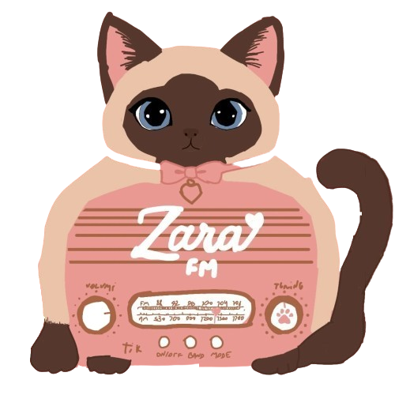

Rádio Offline
A Rádio Oficial
Você está ouvindo a Zara FM! Transmitindo os melhores hits e as programações mais exclusivas, tudo em primeira mão pra você.
Participe
Quer pedir uma música? Mande uma mensagem no Discord e mande sua sugestão de som ao vivo pra a gente tocar.
Pedir música (thokkj)Patrocínio Oficial
Esta transmissão conta com o apoio da Fabridoce. Os melhores doces e bolos pra acompanhar a melhor rádio.